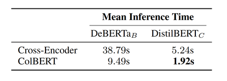
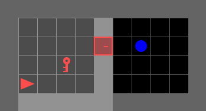

Reward-Guided Online Pruning for LLM Agents
In preparation for ICML 2026. Introduces a novel LLM pruning method for online MDPs by leveraging insights from reinforcement learning.
My research explores the development of more sustainable and efficient AI agents. My techical approach lies at the intersection of reinforcement learning and langage models.
My current project is the first to adapt lanugage model compression to the online agentic domain, which I accomplish by leveraging insights from reinforcement learning in order to identify model components which contribute the most to reward. Learn more about this project below!

In preparation for ICML 2026. Introduces a novel LLM pruning method for online MDPs by leveraging insights from reinforcement learning.

Recently featured in COLM 2025; the project I led during my AI research internship at LG AI. I developed a novel constraint-based LLM-as-a-judge approach that allowed for highly performant knowledge distillation of LLM agents for automated web browsing.

This DistilBERT-based ColBERT candidate generation model achieves top-k recall performance within 10% of the Mind2Web candidate generation baseline, but with 1/20th of the inference time.

Description needed.

Here, I adapted an offline RL algorithm for online contexts that leveraged the powerful representation capabilities of the transformer architecture.